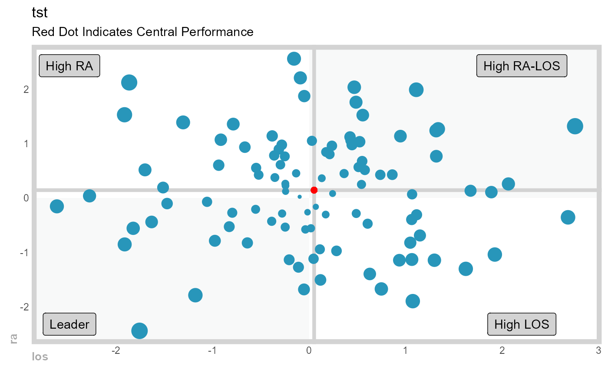
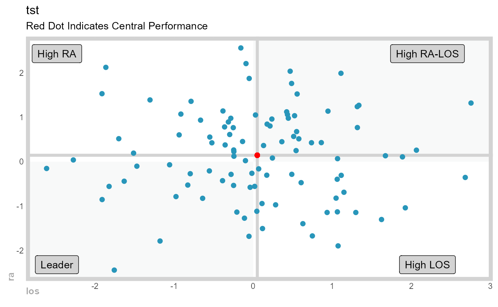

Gartner Magic Chart - Plotting of two continuous variables
Source:R/plt-gartner-magic-chart.R
gartner_magic_chart_plt.RdPlot a Gartner Magic Chart of two continuous variables.
Usage
gartner_magic_chart_plt(
.data,
.x_col,
.y_col,
.point_size_col = NULL,
.y_lab = "",
.x_lab = "",
.plot_title = "",
.top_left_label = "",
.top_right_label = "",
.bottom_right_label = "",
.bottom_left_label = ""
)Arguments
- .data
The dataset you want to plot.
- .x_col
The x-axis for the plot.
- .y_col
The y-axis for the plot.
- .point_size_col
The default is NULL. If you want to size the dots by a column in the data frame/tibble, enter the column name here.
- .y_lab
The y-axis label (default: "").
- .x_lab
The x-axis label (default: "").
- .plot_title
The title of the plot (default: "").
- .top_left_label
The top left label (default: "").
- .top_right_label
The top right label (default: "").
- .bottom_right_label
The bottom right label (default: "").
- .bottom_left_label
The bottom left label (default: "").
See also
Other Plotting Functions:
diverging_bar_plt(),
diverging_lollipop_plt(),
los_ra_index_plt(),
ts_alos_plt(),
ts_median_excess_plt(),
ts_plt(),
ts_readmit_rate_plt()
Examples
library(dplyr)
library(ggplot2)
data_tbl <- tibble(
x = rnorm(100, 0, 1),
y = rnorm(100, 0, 1),
z = abs(x) + abs(y)
)
gartner_magic_chart_plt(
.data = data_tbl,
.x_col = x,
.y_col = y,
.point_size_col = z,
.x_lab = "los",
.y_lab = "ra",
.plot_title = "tst",
.top_right_label = "High RA-LOS",
.top_left_label = "High RA",
.bottom_left_label = "Leader",
.bottom_right_label = "High LOS"
)
#> Warning: The `size` argument of `element_rect()` is deprecated as of ggplot2 3.4.0.
#> ℹ Please use the `linewidth` argument instead.
#> ℹ The deprecated feature was likely used in the healthyR package.
#> Please report the issue at <https://github.com/spsanderson/healthyR/issues>.
#> Warning: Using `size` aesthetic for lines was deprecated in ggplot2 3.4.0.
#> ℹ Please use `linewidth` instead.
#> ℹ The deprecated feature was likely used in the healthyR package.
#> Please report the issue at <https://github.com/spsanderson/healthyR/issues>.

gartner_magic_chart_plt(
.data = data_tbl,
.x_col = x,
.y_col = y,
.point_size_col = NULL,
.x_lab = "los",
.y_lab = "ra",
.plot_title = "tst",
.top_right_label = "High RA-LOS",
.top_left_label = "High RA",
.bottom_left_label = "Leader",
.bottom_right_label = "High LOS"
)
